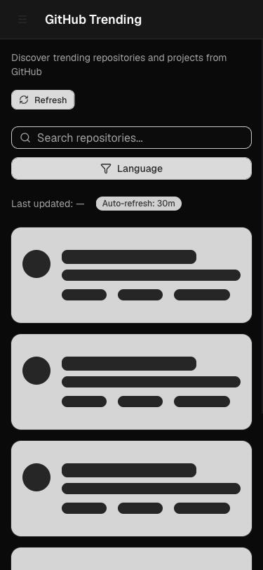
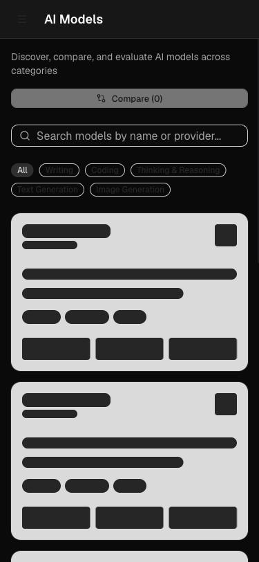

1. GitHub Trending
Desktop — Light / Dark
2. AI Models
Desktop — Light / Dark
3. File Manager
Desktop — Light / Dark
4. Mobile Responsive (375px)
Dark mode — Trending / AI Models

GitHub Trending — Mobile

AI Models — Mobile
5. Project Progress
- ✓ Phase 1 — Project analysis & planning
- ✓ Phase 2 — Project scaffolding (frontend + backend)
- ✓ Phase 3 — Dashboard layout, design system, responsive UI
- ○ Phase 4 — GitHub Trending (search, filters, repo cards)
- ○ Phase 5 — AI Models Directory & Comparison
- ○ Phase 6 — Local File Manager (File System Access API)
- ○ Phase 7 — Cloud storage & sync (Supabase)
- ○ Phase 8 — Responsive polish, accessibility, error handling
- ○ Phase 9 — Testing & bug fixes
- ○ Phase 10 — README & documentation
6. Features Implemented So Far
Collapsible sidebar
Dark/Light toggle
Mobile drawer
Dynamic headers
Skeleton loaders
Category filters
Search inputs
Backend API
GitHub service
Models service
Cloud storage
Path security